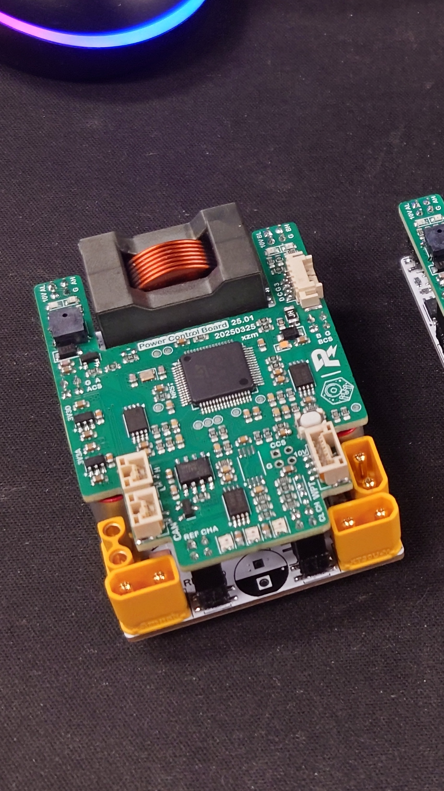
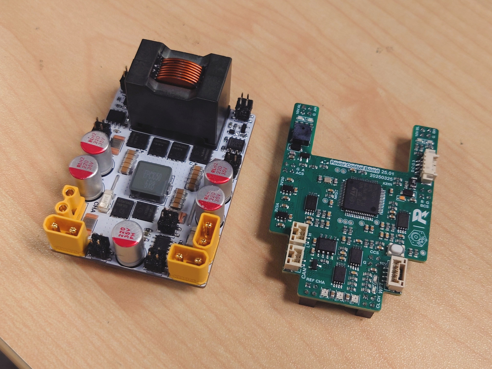
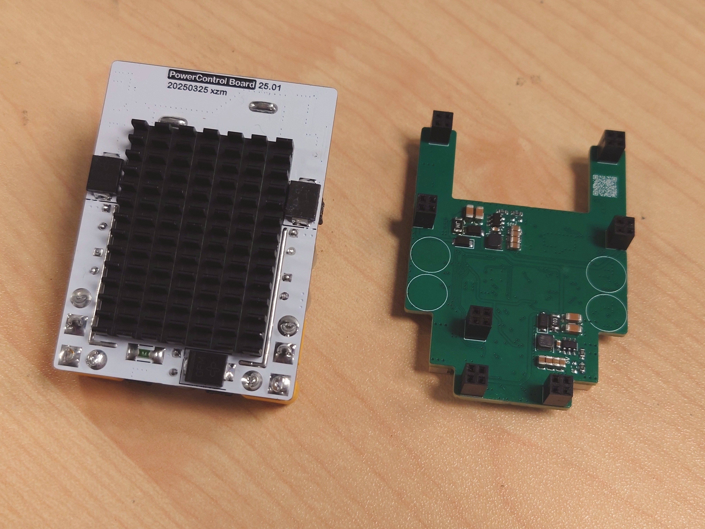
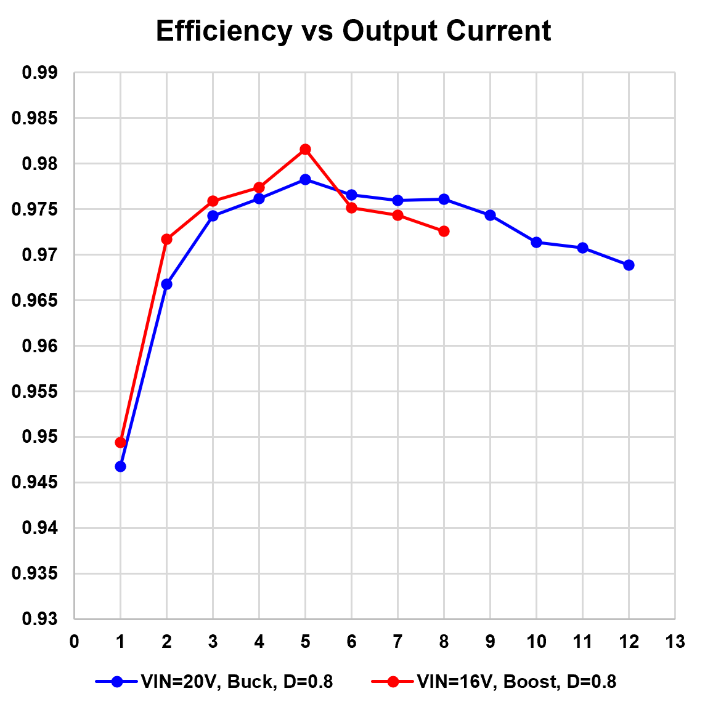
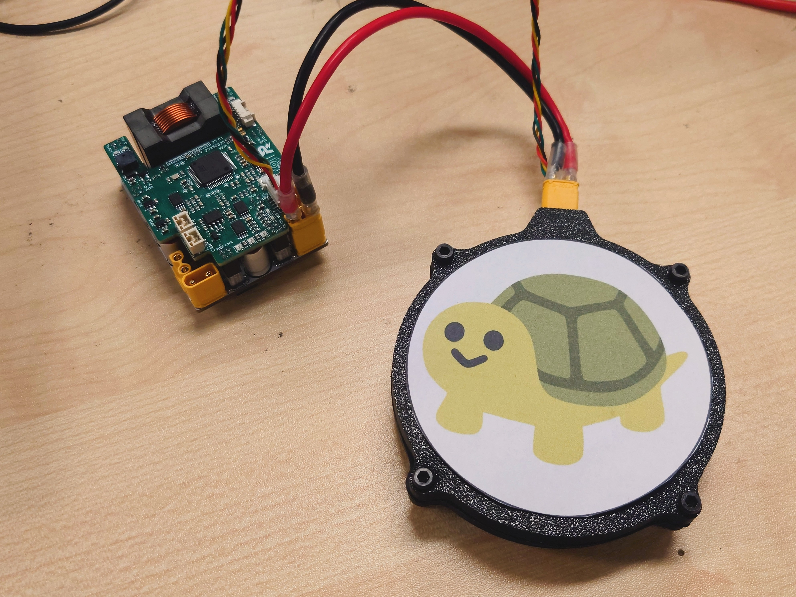
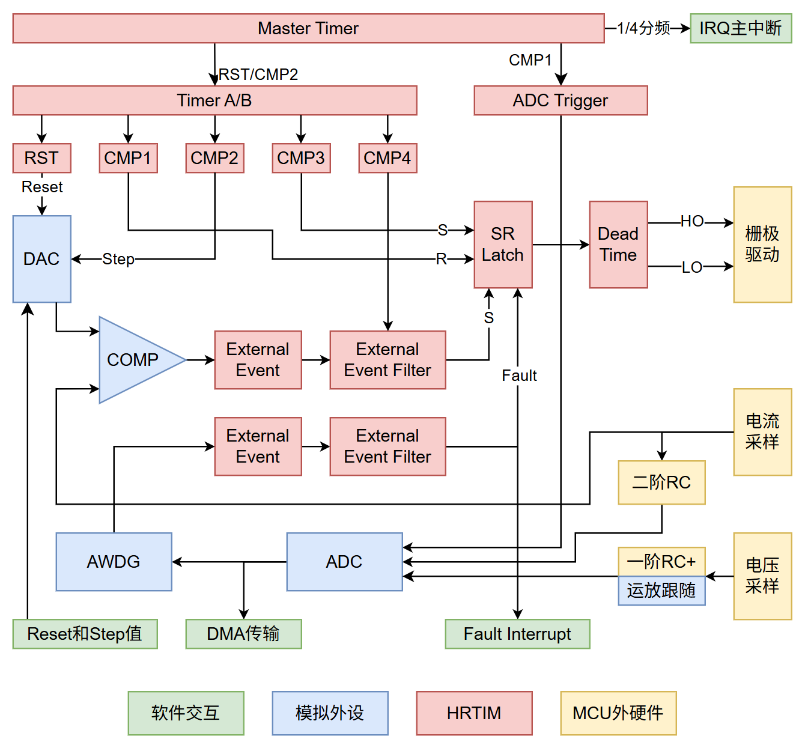
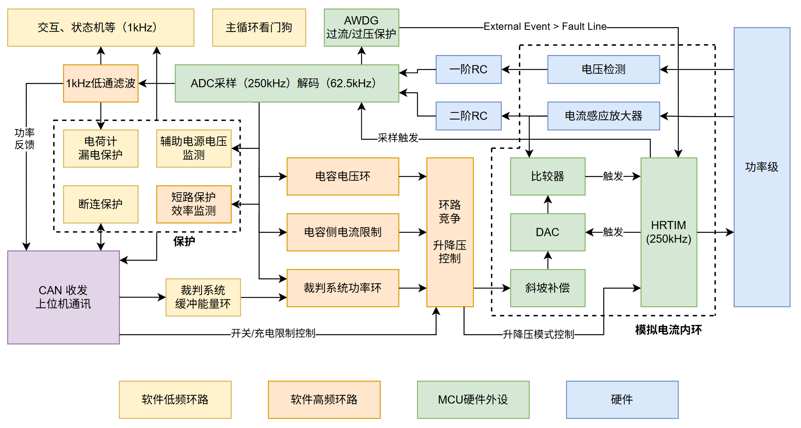
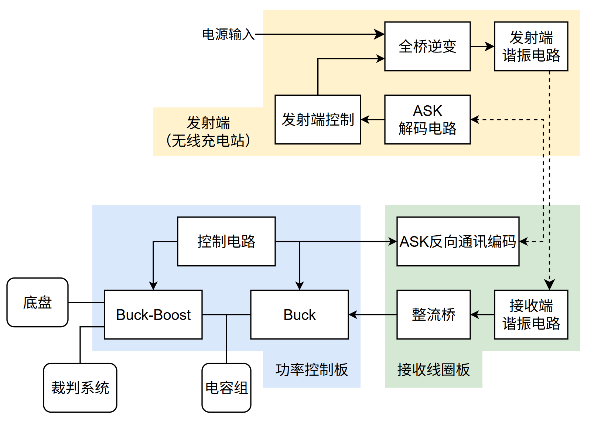
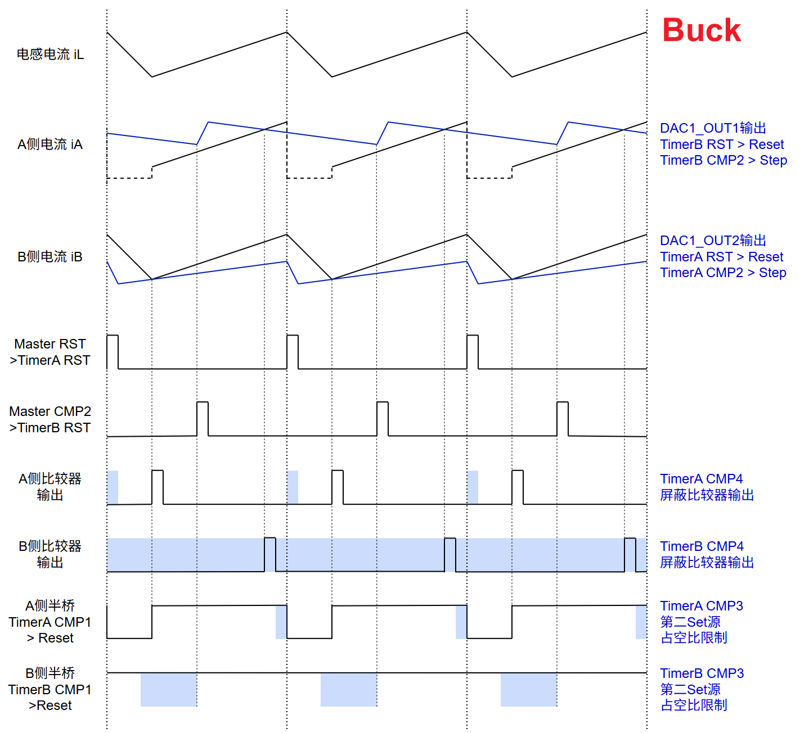
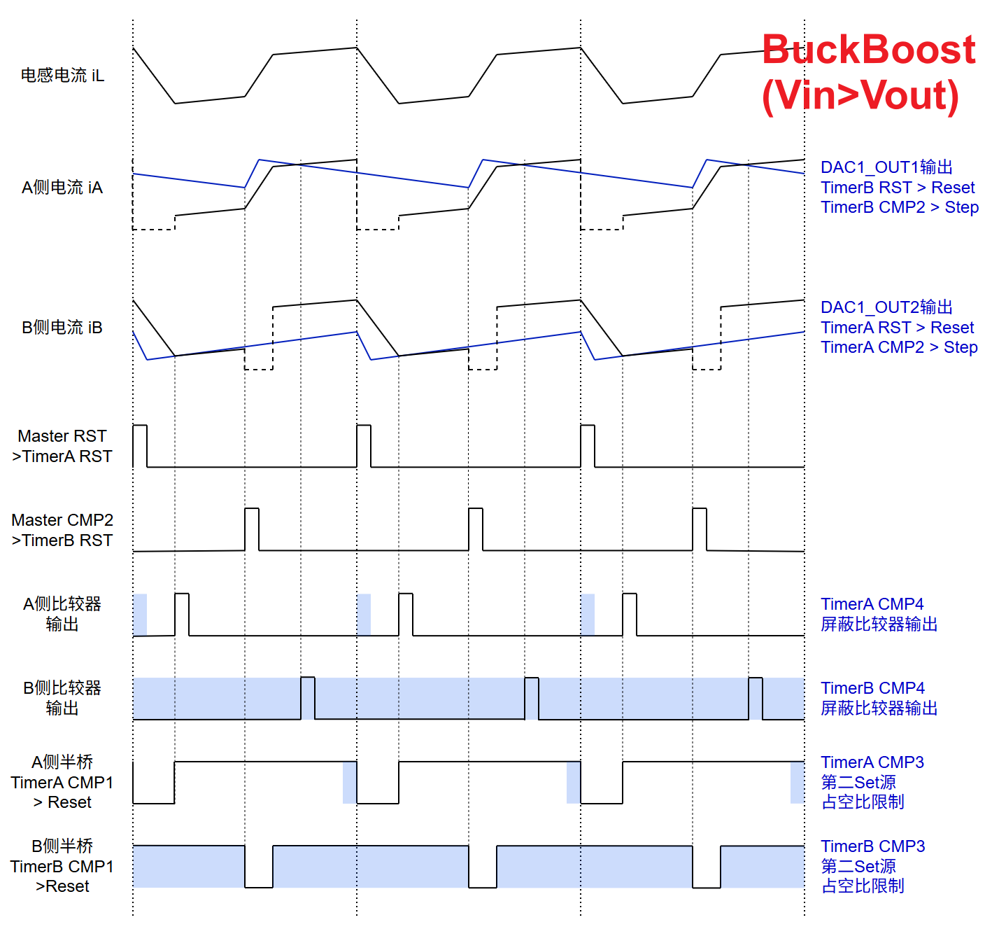
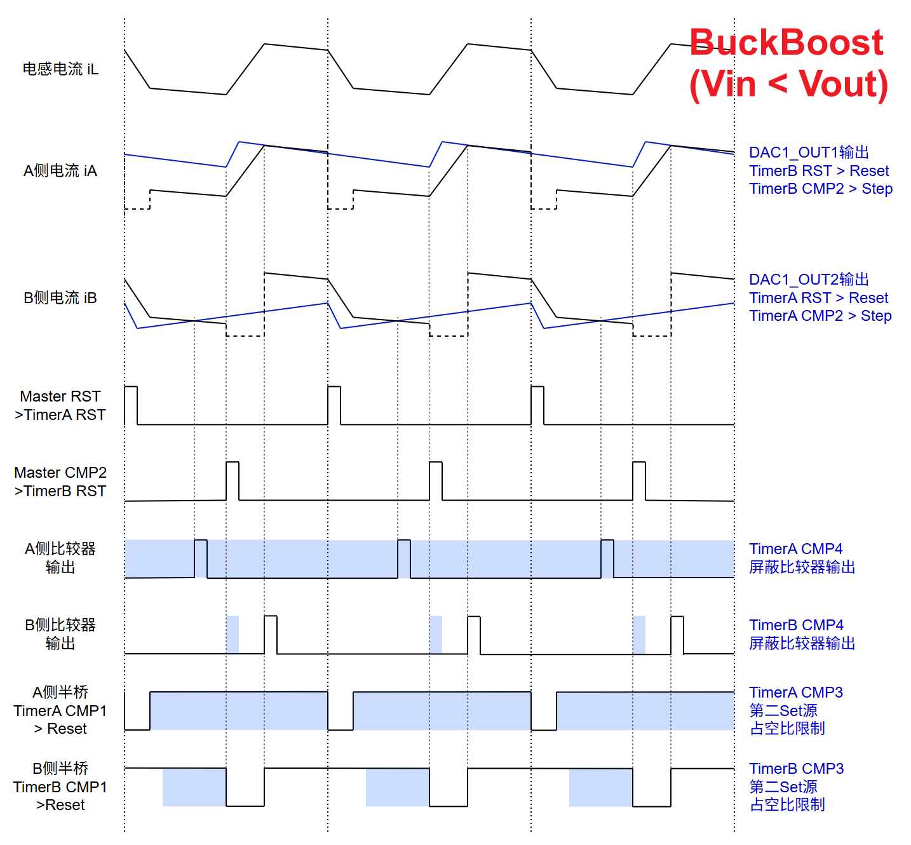
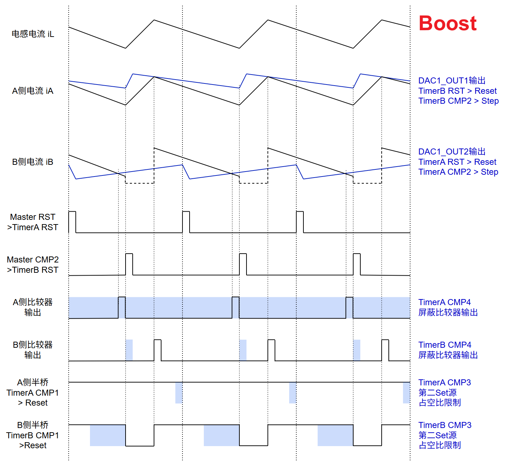
底盘超级电容控制器（RM AWARD 2025 / 开源奖三等奖）
已开源基于 STM32G474 的双向四开关 BuckBoost 超级电容控制器，可为机器人底盘提供 400W+ 额外功率。特化方向：低空载功耗、小体积
关键参数
- 空载功耗 <1.2W
- 持续电流 15A
- 电流环阶跃响应约 20us
- 体积 60x44x30mm
- 通过 CAN 总线与主控板通信，实时反馈运行状态与功率等参数
亮点与创新
- 充分利用 MCU 集成外设（DAC、比较器、运放、基准电压源、AWDG等）简化硬件设计
- 高可靠性：在全阵容机器人上稳定运行两赛季，未出现故障